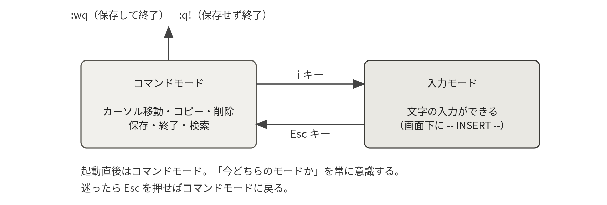

- 最小構成のサーバでも必ず使えるエディタとして、viを学ぶ理由
- 「入力する状態」と「操作する状態」を分けるモードという考え方
- 移動・削除・検索・置換・保存・終了の最小限の操作
- 操作がおかしくなったときの安全な脱出方法
4-1なぜ今もviなのか
viは1976年に生まれたテキストエディタであり、現在広く使われているのはその改良版のVimである。半世紀近く前のソフトウェアを今も学ぶ理由は明快で、viはPOSIXという標準規格に含まれており、どんなに最小構成のLinuxサーバにも必ず入っているからである。
障害対応で緊急ログインしたサーバに、使い慣れたエディタがインストールされている保証はない。viさえ使えれば、世界中のどのUNIX系サーバでも設定ファイルを編集できる。
- vi / Vimvi improved
- UNIX系OSの標準的なテキストエディタ。現在使われているのはほぼ改良版のVimで、実習で
viと打つと起動するのもVimである。
- POSIXportable operating system interface
- UNIX系OSが共通して備えるべき機能を定めた標準規格。viがここに含まれるため、どのサーバにも必ず入っていると期待できる。
4-2モードという考え方
viの最大の特徴は、「文字を入力する状態」と「編集操作をする状態」が分かれていることである。通常のエディタではCtrlキーなどとの組み合わせで操作を行うが、viではモードを切り替えることで、単独のキーを強力な編集命令として使う。慣れるとホームポジションから手を動かさずに高速な編集ができるため、現在でも多くのエンジニアが愛用している。
- コマンドモードnormal mode
- viを起動した直後の状態。キーがそのまま編集命令として働く（xで1文字削除、ddで1行切り取りなど）。迷ったらEscを押せばここに戻る。
- 入力モードinsert mode
- 打ったキーがそのまま文字として入るモード。i／a／oで入り、Escで抜ける。画面下に
-- INSERT --と出ているのが目印である。

起動直後はコマンドモードで、キーは編集命令として解釈されている。文字を入れたいときはiを押して入力モードに移る。おかしくなったらEscを数回押してコマンドモードに戻り、uで取り消せばよい。
入力中にカーソルキーを押したらA や B が入ってしまった
Raspberry Pi OS Lite の標準は最小構成の vim-tiny で、この症状が起きることがある。sudo apt install vim でフル版を入れると解消する（第1回 1-7）。入力モードではhjklも移動にはならないので、いったんEscで抜けてから移動するのが確実である。
4-3操作リファレンス
| 操作 | 意味 |
|---|---|
| i ／ a ／ o | 入力モードへ（i：カーソル位置、a：直後、o：下に新しい行を作って） |
| Esc | コマンドモードに戻る（迷ったらまずEsc） |
| h j k l | 左・下・上・右へ移動（カーソルキーも使える） |
| 0 ／ $ ／ gg ／ G | 行頭／行末／先頭行／最終行へ移動 |
| x ／ dd ／ dw | 1文字削除／1行切り取り／1単語削除 |
| yy ／ p ／ P | 1行コピー／下に貼り付け／上に貼り付け |
| u ／ Ctrl+r | 取り消し（undo）／やり直し（redo）。u を知っていると安心感が違う |
/文字列 → n | 下方向に検索 → 次の候補へ（?文字列 で上方向） |
:%s/旧/新/g | ファイル全体で文字列を置換 |
:w ／ :q ／ :wq ／ :q! | 保存／終了／保存して終了／保存せず強制終了 |
:set number | 行番号を表示（:set nonumber で消す） |
※ 独習には、Vimに付属する公式チュートリアル vimtutor が優れている（ターミナルで vimtutor ja と実行。約30分）。vimtutor はフル版の vim パッケージに含まれる。Raspberry Pi OS Lite の標準は最小構成の vim-tiny なので、sudo apt install vim で導入しておく（第1回 1-7）。また、誤操作でおかしくなったら、Escを数回押してから :q! で「保存せずに出る」のが安全な脱出方法である。
- vimtutorvimtutor ja
- Vimに付属する公式の練習用チュートリアル。約30分で基本操作をひととおり体験できる。フル版の
vimパッケージに含まれる。
:wq と打ったのに E212: Can't open file for writing と出て保存できない
/etc 以下などの設定ファイルは、一般ユーザには書き込み権限がない。:q! でいったん抜けて、sudo vi ファイル名 で開き直す（第5章）。
E325: ATTENTION とスワップファイルの警告が出る
前回viが正常に終了しなかったときに残る作業用ファイルの警告である。同じファイルを別の端末で開いていないことを確かめたうえで、編集内容を取り戻したいなら回復、不要なら削除を選ぶ。判断に迷うときは、いったん終了して教員に確認するのが安全である。
設定ファイルを保存したのに、サービスの動きが変わらないviでの保存は設定ファイルを書き換えただけである。systemdのユニットファイルなら sudo systemctl daemon-reload、サービスの設定なら再起動が必要になる（第2回 2-5、第6章 6-2）。
4-4Vimをもう一歩使いこなす
4-3節の操作リファレンスは「設定ファイルを1行直して保存する」ために必要な最小限だった。しかしサーバの運用では、数百行のログを追いかけたり、設定ファイル全体の書式を一括で直したりする場面が出てくる。その場でVimの機能をもう少し知っているだけで、作業時間は目に見えて短くなる。
以下で紹介するキー操作は、すべてコマンドモード（Escを押した状態）で行う。入力モードのまま打つと文字がそのまま入ってしまうので、迷ったらまずEscである。
開き方を使い分ける
Vimは「ファイル名を渡して開く」以外の開き方も用意している。長い設定ファイルの目的の行にいきなり飛べると、探す手間が消える。読むだけのときに書き込めない状態で開くのも、事故を防ぐうえで有効である。
vi ファイル名 # 基本形
vi +42 /etc/systemd/system/luanti.service # 42行目にカーソルを置いて開く
vi +/ExecStart /etc/systemd/system/luanti.service # 最初のExecStartの行に飛んで開く
view /var/log/syslog # 読み取り専用で開く（誤って書き換えない）
vi -O /home/luanti/server/luanti.conf /home/luanti/server/world/world.mt # 2つを左右に並べて開く| オプション | 意味 | 例 |
|---|---|---|
+行番号 | その行にカーソルを置いて開く | vi +42 file |
+/文字列 | その文字列を最初に見つけた行を開く | vi +/User= file |
-R | 読み取り専用。view と同じ | vi -R file |
-O ／ -o | 複数ファイルを左右／上下に並べて開く | vi -O a.conf b.conf |
-d | 2つのファイルの差分を色付きで表示する（vimdiffと同じ） | vi -d a.conf a.conf.bak |
複数のウィンドウを開いた状態では、Ctrl+wを押してからwでウィンドウを移り、:qaで全部まとめて閉じる。-dと-Rは、実習のようにsudoで開く設定ファイルを「見るだけ」にしたいときに特に役立つ。
移動を速くする
1文字ずつhjklで動いていては、100行を超えるファイルでは疲れてしまう。単語単位・行単位・ファイル単位の移動を覚えると、カーソルは一気に目的地へ届く。
| キー | 移動先 | 使いどころ |
|---|---|---|
| w ／ b | 次の単語の先頭／前の単語の先頭 | ExecStart= の行でオプションごとに飛ぶ |
| 0 ／ ^ ／ $ | 行頭／行の最初の文字／行末 | 行頭に#を足してコメントアウトする |
| gg ／ G | ファイルの先頭行／最終行 | ログの末尾（最新）をすぐ見る |
:行番号 ／ 行番号G | 指定した行 | エラーが「9行目」と言っているとき |
| Ctrl+f ／ Ctrl+b | 1画面下／1画面上 | 長いファイルをざっと眺める |
| % | 対応する括弧 | スクリプトの(と)の対応を確かめる |
行番号を表示しておくと、エラーメッセージが指す行にすぐ移動できる。:set number（略記は :set nu）で表示、:set nonumber（:set nonu）で非表示である。systemdやsshdの構文エラーは「ファイル名:行番号:」の形で出るので、行番号表示は設定ファイルを触るときの必需品といってよい。
検索と置換
「この設定はどこに書いてあるのか」を探すのが検索、「この文字列を全部書き換えたい」のが置換である。置換はまとめて直せるぶん失敗も大きいので、確認付きの形を覚えておくと安全である。
| 入力 | はたらき | 例 |
|---|---|---|
/文字列 → n ／ N | 下方向に検索し、次／前の候補へ | /ExecStart |
?文字列 | 上方向に検索する | ?Restart |
:noh | 検索語のハイライトを消す | 読みづらくなったとき |
:%s/旧/新/g | ファイル全体を置換する | :%s/pi/luanti/g |
:%s/旧/新/gc | 1か所ずつ確認しながら置換する | 置換前にまずこれを使う |
:10,20s/旧/新/g | 10行目から20行目だけを置換する | 特定のセクションだけ直す |
gcを付けると、1か所ごとに replace with luanti (y/n/a/q/l/^E/^Y)? と聞かれる。yで置換、nで飛ばす、aで残り全部、qで中断である。ユニットファイルのユーザ名を置き換えるような作業では、まずgcで1件ずつ見るのが確実である。
出力の読み方：置換すると、Vimは画面のいちばん下に結果を1行で報告する。
（コマンドモードで :%s/pi/luanti/g と入力した直後）
3 substitutions on 3 lines
（置換する文字列が見つからなかったとき）
E486: Pattern not found: pi大切なのは「いくつ置換されたか」を必ず見ることである。3か所直すつもりが 4 substitutions と出たなら、意図しない行まで書き換えている。その場でuを押せば置換はまとめて取り消せるので、慌てて:wqで保存しないこと。E486は「1つも見つからなかった」という意味で、綴りの間違いか、すでに置換済みかのどちらかである。
取り消し・やり直しと、まとめて編集する
Vimを安心して使えるかどうかは、u（取り消し）を知っているかどうかで決まる。何行消してしまっても、保存していなければuを連打すれば元に戻る。取り消しすぎたときはCtrl+rでやり直す。
複数行をまとめて扱うには、操作キーの前に回数を付ける方法と、ビジュアルモードで範囲を選ぶ方法の2通りがある。前者は「3行コピー」のように回数がはっきりしているとき、後者は画面を見ながら範囲を決めたいときに向いている。
| キー | はたらき | 例 |
|---|---|---|
| u ／ Ctrl+r | 取り消し／やり直し | 消しすぎたらまずu |
| 3yy ／ 3dd | カーソル行から3行をコピー／切り取り | 設定の3行ブロックを複製する |
| p ／ P | カーソル行の下／上に貼り付け | コピーした行を置く |
| v ／ V | 文字単位／行単位のビジュアルモードに入る | 範囲を目で見て選ぶ |
| V → jj → d | 3行を選んで削除する | 不要なセクションを消す |
| V → j → > | 選んだ行をまとめて字下げする | スクリプトの整形 |
| . | 直前の編集操作をもう一度繰り返す | 同じ修正を続けて当てる |
- ビジュアルモードvisual mode
- 範囲を選んでからまとめて操作するためのモード。vで文字単位、Vで行単位に入り、移動キーで範囲を伸ばしてy（コピー）やd（削除）を押す。Escで抜ける。
外部コマンドの結果を取り込む
実験記録を書いているときに「いま実行したコマンドの出力をそのまま貼りたい」ことがある。Vimはコマンドモードから外部コマンドを呼び出し、その出力をカーソルの下に挿入できる。画面をコピーして貼り直すよりも確実で、打ち間違いも混ざらない。
（:r ! で、コマンドの出力をカーソルの下の行に読み込む）
:r !date
:r !systemctl is-active luanti
:r !ls -l /home/luanti/server
（:! だけなら、いったんVimを抜けずにコマンドを実行して結果を見るだけ）
:!df -h読み込んだ行はふつうのテキストなので、要らなければuで取り消せる。:!のほうは実行結果を表示するだけで、ファイルには何も入らない。Enterを押すとVimの画面に戻る。
第1回 1-7 viエディタと答案の提出で作る答案ファイルや、第4回 4-2のシェルスクリプトを書くときに、:r !でコマンドの実行結果をそのまま貼り込めると記録が正確になる。:set nuは第2回 2-5でユニットファイルのエラー行を探すときに効く。
.vimrc でVimを自分好みにする
Vimの設定は、ホームディレクトリの ~/.vimrc というファイルに書く。起動のたびに読み込まれるので、:set nu のように毎回打っていた設定を1回書けば済む。次は、サーバの設定ファイルを編集する用途に絞った最小限の例である。
" 行番号を表示する
set number
" 検索結果を強調し、打ちながら移動する
set hlsearch
set incsearch
" 小文字で検索したときは大文字小文字を区別しない
set ignorecase
set smartcase
" Tabキーで半角スペース4つを入力する（設定ファイル向け）
set tabstop=4
set shiftwidth=4
set expandtab
" 入力モードでもBackspaceが効くようにする
set backspace=indent,eol,start
" 文法に応じた色分けを有効にする
syntax on作成したら、いったんVimを終了して開き直せば反映される。~/.vimrcは自分のホームディレクトリにあるので、sudo viで開いたVimには適用されない点に注意する（sudoで実行するとrootのホームディレクトリ /root が参照されるため）。行頭の " はVimの設定ファイルにおけるコメントである。
- .vimrc~/.vimrc
- Vimの設定をまとめて書いておくファイル。ホームディレクトリに置くと起動時に自動で読み込まれ、
set numberなどの設定を毎回打たずに済む。
~/.vimrc に syntax on と書いたら E319 などのエラーが出る
Raspberry Pi OS Lite の標準は最小構成の vim-tiny で、色分けなど一部の機能が入っていない。sudo apt install -y vim でフル版を入れると解消する（第1回 1-7）。
sudo vi で開くと、設定した行番号表示が効かない
sudoで起動したVimはrootの設定（/root/.vimrc）を読む。自分の設定を使いたいなら、その場で :set nu と打つか、rootにも同じ設定ファイルを置く。実習では前者で十分である。
4-5nanoという選択肢
viは強力だが、モードの切り替えに慣れるまで時間がかかる。Debian系のLinuxには、もう1つnanoという素直なエディタが用意されている。nanoにはモードが無く、開いたらそのまま文字を打てて、画面の下に操作方法が常時表示されている。「設定ファイルを1行だけ直したい」という場面では、nanoのほうが速いことも多い。
ただし4-1節で述べたとおり、nanoが入っていないサーバは実在する。「nanoを使うが、viも読み書きできる」という状態を目指すのがよい。
nano --version # 入っているか確認（バージョンが出れば導入済み）
sudo apt install -y nano # 入っていない場合だけ実行
nano ファイル名 # 基本形
sudo nano /etc/systemd/system/luanti.service # システムの設定ファイルはsudoで
nano -l /home/luanti/server/luanti.conf # -l で行番号を表示する| キー操作 | はたらき | 補足 |
|---|---|---|
| Ctrl+O | 保存する（write out） | ファイル名を聞かれるのでEnter |
| Ctrl+X | 終了する | 未保存なら保存するか聞かれる |
| Ctrl+W | 文字列を検索する | Alt+Wで次の候補 |
| Ctrl+K ／ Ctrl+U | 1行切り取り／貼り付け | 続けて押せば複数行 |
| Ctrl+C | 現在の行番号を表示する | nanoでは中断の意味ではない |
| Alt+U | 直前の操作を取り消す | viのuに相当 |
画面下に並ぶ ^O Write Out のような表示の ^ はCtrlキーを、M- はAltキーを表す。つまり ^X はCtrl+Xである。この対応さえ分かれば、操作を暗記しなくても画面を見れば使える。
- nanoGNU nano
- モードを持たない素直なテキストエディタ。開いたらすぐ入力でき、操作方法が画面下に常に出ている。
^Xの^はCtrlキーを意味する。
nanoではCtrl+Cは「現在位置の表示」であり、終了はCtrl+Xである。シェルで実行中のコマンドを止めるCtrl+Cとは意味が違うので混同しないこと。
nanoで編集したら、設定ファイルの行が勝手に折り返された古い設定では長い行を自動改行することがある。ユニットファイルの ExecStart= のような長い行が2行に割れると、サービスは起動しなくなる。心配なら nano -w ファイル名（折り返しを無効にする）で開き、保存後に cat で1行になっているか確かめる。
4-6設定ファイルを安全に編集する作法
サーバの障害の多くは、攻撃ではなく「設定ファイルの編集ミス」で起きる。エディタの操作を覚えることと同じくらい、編集の前後で何をするかという作法が大切である。ここでは、実務で当たり前に行われている3つの手順、つまり「取っておく」「見比べる」「確かめる」を扱う。
編集前に取っておく
設定ファイルを開く前に、必ず複製を作る。1行のコマンドで済み、元に戻すときの安心料としては安すぎるほどである。cp -a は、所有者・パーミッション・更新日時をそのまま保って複製するオプションである。
sudo cp -a /etc/systemd/system/luanti.service /etc/systemd/system/luanti.service.bak
sudo cp -a /etc/ssh/sshd_config /etc/ssh/sshd_config.$(date +%Y%m%d) # 日付を付けて残す
ls -l /etc/systemd/system/ # 複製できたか確認
-rw-r--r-- 1 root root 412 May 12 14:02 luanti.service
-rw-r--r-- 1 root root 412 May 12 14:02 luanti.service.bak| オプション | 意味 | 例 |
|---|---|---|
-a | 所有者・パーミッション・日時を保ったまま複製する | sudo cp -a a a.bak |
-i | 上書きする前に確認を求める | cp -i a b |
-n | 既にあるファイルは上書きしない | cp -n a b |
-r | ディレクトリごと複製する | cp -r dir dir.bak |
-v | 何を複製したか表示する | cp -av a a.bak |
cpは既にあるファイルを黙って上書きする。sudo cp -a luanti.service luanti.service.bak を2回実行すると、1回目に取った「編集前の状態」は消えて、編集後の内容で上書きされる。同じ名前のバックアップを作り直す前に、必ず中身を cat で確かめること。不安なら上の例のように $(date +%Y%m%d) で日付を付けて別名にする。
diff で見比べる
diffは2つのファイルの違いだけを表示するコマンドである。「自分が何を変えたのか」を自分で説明できる状態にしてから保存するのが、設定変更の基本である。-u（unified形式）を付けると、変更箇所の前後数行も一緒に表示され、人間にとって格段に読みやすくなる。
diff -u /etc/systemd/system/luanti.service.bak /etc/systemd/system/luanti.service
diff -u --color=always a.conf b.conf # 色を付けて見やすくする
diff -q a.conf b.conf # 違いの有無だけを知りたいとき
diff -r /home/luanti/server /home/luanti/server.bak # ディレクトリ全体を比較する| オプション | 意味 | 例 |
|---|---|---|
-u | 前後の行を含むunified形式で表示する | diff -u a a.bak |
-q | 違うかどうかだけを1行で報告する | diff -q a b |
-r | ディレクトリを再帰的に比較する | diff -r dir1 dir2 |
-w | 空白の違いを無視する | diff -uw a b |
--color=always | 追加行と削除行に色を付ける | diff -u --color=always a b |
出力の読み方：変更した行だけが前後の行とともに並ぶので、自分の編集を1画面で点検できる。
diff -u /etc/systemd/system/luanti.service.bak /etc/systemd/system/luanti.service
--- /etc/systemd/system/luanti.service.bak 2026-05-12 14:02:11.000000000 +0900
+++ /etc/systemd/system/luanti.service 2026-05-12 14:18:47.000000000 +0900
@@ -5,7 +5,8 @@
[Service]
-User=taro
+User=luanti
+Environment=HOME=/home/luanti
WorkingDirectory=/home/luanti/server
Restart=on-failure先頭の --- が変更前のファイル、+++ が変更後のファイルである。@@ -5,7 +5,8 @@ は「変更前は5行目から7行分、変更後は5行目から8行分」を表しており、この部分を見れば行数が1行増えたことも分かる。以降、行頭が - の行は削除、+ の行は追加、半角スペースの行は変更なしである。この例では User= を書き換え、Environment=HOME=/home/luanti を1行追加したことが読み取れる（第3回 3-3で実際に行う変更である）。
意図していない行が - や + に現れていないかを確認するのが、この作業のいちばんの目的である。見覚えのない差分があれば、それは打ち間違いか、カーソルが違う行にあったまま編集したかのどちらかである。
- diffdiff -u / unified形式
- 2つのファイルの違いだけを表示するコマンド。
-uを付けた形式では、-で始まる行が削除、+で始まる行が追加を表す。編集前のバックアップと見比べるのが定番の使い方である。
保存したら検証する
設定ファイルを書き換えたあと、いきなりサービスを再起動するのは危険である。書式に誤りがあれば起動に失敗し、SSHの設定であれば自分が接続できなくなることさえある。多くのサーバソフトには「設定ファイルの書式だけを検査する」機能が用意されているので、再起動の前に必ず検査を通すという習慣を付けたい。
sudo systemd-analyze verify /etc/systemd/system/luanti.service # systemdのユニットファイル
sudo sshd -t # SSHサーバの設定（何も出なければ正常）
sudo visudo -c # sudoの設定（第5章で扱う）
bash -n スクリプト名.sh # シェルスクリプトの文法検査（第9章で扱う）出力の読み方：検査に通れば何も出ない。出たメッセージは、その場で直すべき箇所を行番号で教えている。
sudo systemd-analyze verify /etc/systemd/system/luanti.service
/etc/systemd/system/luanti.service:9: Unknown key name 'ExecStar' in section 'Service', ignoring.
（誤りが無い場合は、何も表示されずにプロンプトが戻る）出力は「ファイル名:行番号: 内容」の形である。この例は9行目の ExecStart を ExecStar と打ち間違えた場合で、systemdは知らない項目を黙って無視するため、検査しなければ「起動コマンドが書かれていないサービス」ができあがってしまう。何も表示されないことが正常である点に注意したい。エラーが出たら、vi +9 /etc/systemd/system/luanti.service のように行番号を指定して開けばすぐ直せる。
SSHの設定ファイル /etc/ssh/sshd_config を編集して sudo systemctl restart ssh する作業は、書式を誤ると自分がサーバから締め出される。必ず sudo sshd -t で検査し、さらに現在のSSH接続はつないだまま、別のターミナルから新しく接続できることを確かめてから、元の接続を閉じること。接続できなくなった場合は、Raspberry Pi にモニタとキーボードを直接つないで復旧する（第5章 5-7）。
第2回 2-5と第3回 3-3でユニットファイルを編集するとき、第3回 3-7でSSHを公開鍵認証に切り替えるときが、この作法の出番である。特に3-7は締め出しの危険がある作業なので、バックアップと検査を省略しないこと。
- 構文チェックsystemd-analyze verify / sshd -t
- 設定ファイルの書式だけを検査する機能。サービスを再起動する前に実行すると、起動失敗や締め出しの多くを未然に防げる。何も表示されないのが正常という点に注意する。
:set nuで行番号を出し、:42で42行目へ移動できる:%s/旧/新/gcで1か所ずつ確認しながら置換し、uで取り消せる- 設定ファイルを直す前に
sudo cp -aでバックアップを取り、diff -uで差分を説明できる sudo systemd-analyze verifyが何も出力しないことを確かめてから再起動している